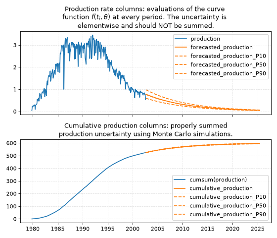

The ADCA package
Introduction to ADCA
The Automatic DCA (adca) system is built on top of the dca package.
It wraps the core mathematical routines into a system that lets the user run DCA on a dataset without having to write code.
ADCA is configured with a .yaml file that specifies data sources, well groupings, preprocessing steps, curve fitting parameters and more.
After reading this page, try to follow the ADCA tutorial.
YAML configuration files
Here is a minimal example of a .yaml configuration file for ADCA package.
- group:
name: "Example_Group" # Name of a group (collection of wells)
# Data source settings
source:
name: "DataSourceName" # PDM, local files, ...
table: "Database.Table"
phases: ["oil"] # One or more phases. If >1, they are summed.
frequency: "monthly" # 'monthly' or 'daily'
# Filter by time (for backtesting). Must have format 'YYYY-MM' or
# 'YYYY-MM-DD' matching 'frequency'. Start (inclusive), end (exclusive)
period_range: [null, null]
# Wells to include
wells:
"well1": # Complete history for this well
"well2": # Split this well into two segments
- [null, "2020-01"] # Format: 'YYYY-MM' or 'YYYY-MM-DD'
- ["2020-01", null]
"well3,well4": # Sum wells with ',' (no space), then split
- ["2010-01", null]
# Preprocessing steps
preprocessing: "producing_time" # or 'calendar_time'
# Postprocessing steps
postprocessing:
- "pforecast"
# Curve fitting settings
curve_fitting:
split: 0.8 # Make a 80/20 train/test split
curve_model: "arps" # Curve model for DCA ('arps' or 'exponential')
# Forecast 120 months (matching 'source.frequency'), alternatively use
# 'YYYY-MM' or 'YYYY-MM-DD' to forecast up to and excluding that period
forecast_periods: 120
# Hyperparameter tuning
hyperparameters:
half_life: [6, 120] # Value range => tune this hyperparameter
prior_strength: 0.1 # Single value => fixed hyperparameter
Note
We recommend running adca init from the terminal to get an initial demo config file.
Below are the main configuration options available in the .yaml files for the ADCA system:
Group: Defines a collection of wells to be run together, with a group name. This allows one asset, e.g. Troll, to have several groups in a file
troll.yaml, for instanceTrollGasShortTermPredictionsandTrollGasLongTermPredictions.Source: Data source details including the database table and phases (e.g., oil, gas) to consider. Typically the Production Data Mart (PDM).
Wells: Lists the wells and their production segments for analysis. Segmenting wells is one of the most important things a user can do to improve performance of ADCA. Ramp-up periods should be removed. Any earlier production history segments where a well behaved differently should be removed. There is a balance between having data (more data is generally better) and removing low-quality data not relevant for future prediction (data from a different regime can misinform the DCA model).
Preprocessing: Specify how the production data should be preprocessed (e.g., using
producing_timeorcalendar_time). What you choose depends on what you want to predict. Calendar time predicts production if the time on in the future is roughly what it has been in the past (e.g. 80% uptime). Producing time predicts future production if the well is always on (i.e. 100% uptime). The difference can be illustrated by a simple example: ifproduction=[100, 100, 100]andtime_on=[0.8, 0.8, 0.8]thenproducing_timewill predict roughly100 / 0.8 = 125in the next period, whereascalendar_timewill predict roughly100in the next period.Postprocessing: Defines any postprocessing steps.
Curve Fitting: Choose the type of decline curve model and specify how to split the time series for error reporting and hyperparameter tuning. The split should roughly match the purpose of the study. An engineer that is interested in short-term forecasting will choose 0.8 or 0.9. An engineer interested in long-term forecasting will choose 0.2 or 0.5. Three formats are supported: (1) a number like
0.8, (2) a period likeYYYY-MMorYYYY-MM-DDthat matchesfrequencyor (3) an integer corresponding to Python slice syntax. The negative integer like-12means “keep the last 12 months in the test set and the rest in the training set” and a positive integer like36means “keep the first 36 months in the training set and the rest in the test set”.Forecast periods: The parameter
forecast_periodsdenotes how many periods to forecast. For instance, with monthly frequency andforecast_periods=12ADCA will forecast each well one year into the future, counting from the most recent observed period (not from today’s date). Alternatively, you may provide a string in the formatYYYY-MMorYYYY-MM-DDmatching thefrequencyparameter. If so, ADCA will forecast every well up until (but not including) that period. For instance, to forecast until the year 2031, use2031-01and the last period in the forecast will be2030-12.Hyperparameters: Set fixed hyperparameters or ranges for tuning. The parameter
half_lifecontrols the exponentially decaying weights of data back in time. Ifhalf_life=365days, then data that is one year old is weighted to 0.5, data two years old is weighted as 0.25, data three years old is weighted as 0.125, etc. The parameterprior_strengthcontrols how much each curve is pulled towards the grand mean (the prior belief) of all curves in the group of wells. This has a regularizing effect on the individual well predictions. It is often barely noticeable, but matters if some wells have very little data - then their predictions will be drawn in towards that we observe on the other wells.
After saving the .yaml file, run it with the adca run command from the terminal:
adca run my_yaml_file.yaml
Users can create their own .yaml configuration files.
See the files included in the repository for real-world examples of .yaml config files.
Alternatively, use the adca init command to create a dummy .yaml config file.
Using local .csv files as input
To run adca on a local .csv file, change the data source settings name and table.
Here is an example of what the .yaml can look like:
- group:
name: "Example_Group"
# Data source settings
source:
name: "file"
table: "local_production_file_monthly.csv"
phases: ["oil"] # Ignored when reading .csv, 'production' is used.
frequency: "monthly"
period_range: [null, null]
The file format must be a .csv, with comma (,) as the separator.
The following four columns must exist in the file: ['well_id', 'time', 'production', 'time_on'].
The column well_id is an arbitrary string, time must have format YYYY-MM-DD or YYYY-MM, production is a number and time_on is a number between zero and one, representing the fraction within each time period that the well was on.
Below is an example of the format.
well_id,time,production,time_on
well_id_1,2019-11,1972.74,0.959
well_id_1,2019-12,2325.99,0.996
well_id_1,2020-01,2324.05,0.962
...
The production units in the .csv must correspond to the frequency (monthly or daily).
For instance, if the frequency is monthly, then the production column should contain units of total production per month (e.g. bbl/month units).
Avoid mixing e.g. monthly frequency of data with units that are in bbl/day.
Error metrics and diagnostics
In the ADCA output log there are four error metrics.
Before we explain them, keep in mind that examining the plots is just as important.
Decline Curve Analysis is not a high dimensional problem that is impossible to visualize - you can assess the curve fit by eye by examining the output plots, and you should have a look at the plots.
Examining plots can reveal nuanced issues that simple error metrics tend to miss.
To see all possible plots, use the argument --plot-verbosity with a high number, like adca run config_file.yaml --plot-verbosity 9.
The four error metrics that are evaluated on the test set and printed in the output log are:
Negative log-likelihood. The likelihood is a statistical quantity that describes the overall model fit. It is defined as the probability of the data given the model parameters. Minimizing the negative log-likelihood means choosing the parameters that most likely explain the data. The lower the negative log-likelihood is, the better the overall fit. This is the loss function that the optimizer tries to minimize. One drawback of the negative log-likelihood is that it’s hard to interpret. It’s given by the equation \(- \log P(\text{data} \mid \text{parameters})\).
RMSE in logspace. The Root Mean Square Error, evaluated in log-space. The equation is roughly \(\sum_i \left( \log (y_i) - \log \left( f(t_i; \text{parameters}) \right) \right)^2\), where \(y_i\) is the observed production rate and \(f(t_i; \text{parameters})\) is the predicted production rate. The sum goes over every data point \(i\) (period) in every well. A lower number is better.
Relative error (expected). The relative error compares the sum total of all actual production for all wells in the test with the sum total of all predicted production in the test set. The equation is roughly \((\text{sum_forecast} - \text{sum_actual}) / \text{sum_actual}\). This metric is quite easy to reason about: a number like 4% means ADCA overestimated total production in the test set by 4% relative to what actually happened. Unlike the error metrics above, this metric is blind to individual errors and only considers the aggregate error. For instance: if one well is severely overpredicted and one well is severely underpredicted, the numbers could cancel each other out and lead to a 0% error. This metric uses the expected forecast, given by the column
cumulative_productionin the ADCA output.Relative error (P50). Same as above, but uses the median (P50) forecast, given by the column
cumulative_production_P50.
If Relative error (expected) and Relative error (P50) consistently differ by a significant amount, you can use the output log to decide which one to use when forecasting. It’s also possible to manually set hyperparameters based on some other metric than Negative log-likelihood, but in general it should not be necessary. Regardless, remember to always evaluate the plots in addition to metrics.
ADCA outputs
curve_parameters.csvcontains curve parameters and other information per well. Note that the values of curve parameters depend on scaling of both the horizontal and vertical axes, as well as the start date. For instance, if you run ADCA on daily data but you want to import curve parameters into a system that uses months on the horizontal axis, you need to transform the curve parameters.forecast.csvcontains forecast information on the period resolution chosen by the user, i.e. daily or monthly. See the figure below.
In these files, the notation P10 denotes the 10 percentile, P50 denotes the 50 percentile (the median) and P90 denotes the 90 percentile.
Columns that do not contain the _PXX suffix denote the expected value.
A few notes on uncertainty:
The P50 (median) is in general not equal to the expected value, since the errors are assumed to be lognormally distributed. The lognormal distribution is non-symmetric with a heavy tail, so its expected value is greater than the median (P50). Sometimes the difference between P50 and the expected value is barely noticeable, other times it is significant.
There are three types of uncertainty in statistical models like these: (1) predictive uncertainty, (2) parameter uncertainty and (3) model uncertainty. ADCA only models uncertainty of type (1). To alleviate (2) the user must make sure there is a reasonable amount of data. That way there is little uncertainty about the parameters. To alleviate (3) the user must make sure the decline curve assumption is reasonable. That way there is little uncertainty about whether the DCA curve is an appropriate model. The uncertainty that ADCA outputs is typically more narrow than the true observed uncertainty.
The P10, P50 and P90 columns for
forecasted_productionshould NOT be summed. This is because the P90 of a sum is NOT the sum of P90s. To obtain a proper estimate of P10 and P90 of e.g. five years production, the user should use thecumulative_productioncolumns.
(Source code, png, hires.png, pdf)



This figure shows how to interpret the ADCA output columns in the file forecast.csv.
Production rates columns contain uncertainty within each period.
They must not be summed, since the P90 of a sum is NOT the sum of P90s.
The cumulative production columns contain properly summed uncertainties.
For instance, the column cumulative_production_P90 is a proper calculation of the P90 of the sum.
Validation
There is only one reasonable way to validate any forecasting method: go back in time and compare against an unknown future that the model has never seen. Suppose that we want to validate the performance of ADCA on the year 2024, i.e., a forecasting horizon of one year.
Validating ADCA against observed production.
First set
period_range: [null, "2024-01"]at the top of the config file. This excludes any data from 2024 and onward.Determine roughly average age of the wells and
splitaccordingly. Let’s assume that wells have been producing for 5 years on average. We want roughly 1 year in the test set, so we setsplit: 0.8in thecurve_fittingsection of the config file. This means 4 years will go into the training set and 1 year will go into the test set when ADCA determines hyperparameters.Run ADCA with reasonable ranges on hyperparameters. Make note of the optimal hyperparameters that ADCA finds.
Open the config file. Copy the optimal hyperparameters as fixed values into the config file, removing the ranges you used previously. Then set
period_range: [null, "2025-01"]to include data up until 2025, which is the end of the validation set. Setsplit: "2024-01"so that when we run ADCA again the test set will be all of 2024.Run ADCA again. This time it will not perform any hyperparameter tuning, since we fixed the values. The test set ADCA uses is now our validation set: all of 2024. Read off the summary statistics that you’re interested in and inspect the plots.
Validating ADCA against other forecasting methods.
Same procedure as above, but with some important caveats.
Both forecasting methods should use the same training data and the same validation data. ADCA should be tuned to account for the forecasting horizon with an appropriate
split. Both forecasting methods should deal withtime_onin the same way.Decide on preprocessing. Choosing
calendar_timeorproducing_timehas implications for what exactly you are forecasting (see full description above). This also applies if you are comparing observed production against forecasted production outside of ADCA: you should likely choosecalendar_timebecause the question you want to answer is “What would my wells produce in a month, given uptime as it has been historically?” and not “What would my wells produce if uptime was always 100%”? This matters quite a bit iftime_onis not close to1.0.